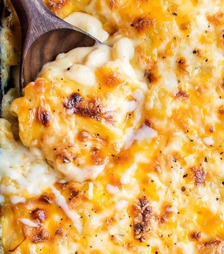

Mac and Cheese

Description
It's mac and cheese! What more could you want? This baked mac and cheese is a family favorite and is sure to satisfy.
Ingredients
1/2 cup all purpose flour
4 cups shredded medium sharp cheddar cheese divided (measured after shredding)
2 cups shredded Gruyere cheese divided (measured after shredding)
Instructions
1. Preheat oven to 325 degrees F and grease a 3 quart baking dish (9x13"). Set aside.
2. Bring a large pot of salted water to a boil. When boiling, add dried pasta and cook 1 minute less than the package directs for al dente.
Drain and drizzle with a little bit of olive oil to keep from sticking.
3. While water is coming to a boil, shred cheeses and toss together to mix, then divide into three piles. Approximately 3 cups for the sauce,
1 1/2 cups for the inner layer, and 1 1/2 cups for the topping.
4. Melt butter in a large saucepan over MED heat. Sprinkle in flour and whisk to combine. Mixture will look like very wet sand. Cook for
approximately one minute, whisking constantly. Slowly pour in about 2 cups of the half and half, while whisking constantly, until smooth.
Slowly pour in the remaining half and half and the whole milk, while whisking constantly, until combined and smooth.
5. Continue to heat over MED heat, whisking very often, until thickened.
6. Remove from heat and stir in spice and 1 1/2 cups of cheeses, stirring to melt and combine. Stir in another 1 1/2 cup of cheeses, stirring
until completely melted and smooth.
7. In a large mixing bowl, combine drained pasta with cheese sauce, stirring to combine fully. Pour half of the pasta mixture into the prepared
baking dish. Top with 1 1/2 cups of shredded cheeses, then top that with remaining pasta mixture.
8. Sprinkle top with last 1 1/2 cups of cheese and bake for 15 minutes, until cheese is bubbly and lightly golden brown.